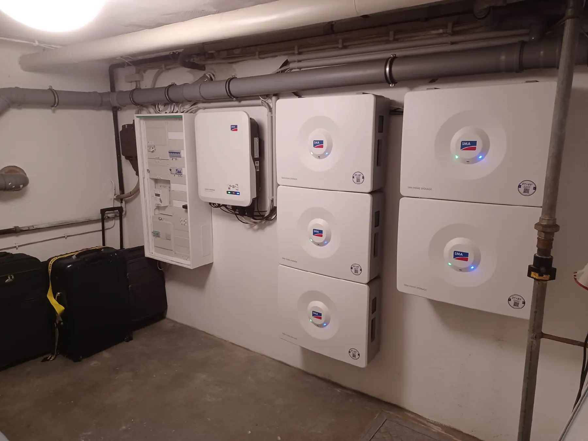

Leistung 03
Sonne auch nach Sonnenuntergang.
Ein Batteriespeicher hebt den Eigenverbrauch von rund 30 auf 60 Prozent – und mit Ersatzstromfunktion bleibt das Haus auch bei Netzausfall versorgt.
Stromspeicher
Sonne auch nach Sonnenuntergang.
Ohne Speicher nutzen Sie rund 30 % Ihres Solarstroms selbst, mit Speicher etwa 60 % – der Rest wird günstig eingespeist statt teuer zugekauft. Wir dimensionieren den Speicher nach Ihrem Verbrauch, nicht nach Katalog.
Was läuft bei Netzausfall weiter?
Notstromsteckdose (SMA Sunny Boy bis 4,6 kW SE): eine separat abgesicherte 16-A-Steckdose liefert Strom, sofern ein SMA-Akku mit mindestens 3,28 kWh vorhanden ist und noch rund 20 % Restkapazität hat – eine kurzfristige Lösung.
Ersatzstrom (SMA DC-Speichersystem): Der Wechselrichter muss dreiphasig sein. Im Zählerschrank werden auf einer Phase bestimmte Stromkreise mit definierten Verbrauchern angeklemmt. Im Winter empfehlen wir, die Entladung auf ca. 50 % zu begrenzen, damit im Ernstfall Reserve bleibt. In jedem Fall lädt der Akku auch bei Stromausfall weiter, wenn genügend Sonne auf die Module fällt.
So arbeitet ein Hybridsystem bei Stromausfall
Erst trennen, dann takten, dann versorgen.
Galvanische Trennung
Nach Norm (VDE-AR-N 4105) trennt sich der Wechselrichter bei Netzausfall innerhalb von Millisekunden vom öffentlichen Netz. Eine automatische Umschalteinrichtung kappt die Verbindung vollständig.
Inselnetz-Aufbau
Erst wenn das Haus zu 100 % isoliert ist, übernimmt der SMA-Wechselrichter selbst die Taktung mit 50 Hz und 230 bzw. 400 V.
Eigenversorgung
DC-Speicher und PV-Module versorgen ausschließlich die Verbraucher im eigenen Haushalt – Kühlschrank, Heizungssteuerung, Licht, Router.
Schnell-Check
Was bringt Ihr Dach – mit Speicher?
Dachfläche und Stromverbrauch eingeben – das Ergebnis rechnet live mit. Richtwerte für die Region Aachen, keine Angebotsgrundlage.
Richtwerte: 5 m² je kWp, 950 kWh je kWp und Jahr, Netzstrom 0,35 €/kWh, Einspeisevergütung 7,78 ct/kWh (Stand Feb.–Juli 2026), Eigenverbrauch ca. 30 % ohne / 60 % mit Speicher, 0,38 kg CO₂ je kWh. Genaue Zahlen gibt es beim Vor-Ort-Termin.
Termin wählen
Welcher Speicher passt zu Ihnen?
Wir dimensionieren nach Ihrem Verbrauch, nicht nach Katalog – kostenlos und unverbindlich.
Vor-Ort-Beratung
Herr Gier kommt zu Ihnen, schaut sich Dach und Zählerschrank an und berät kostenlos.
Termin anfragenBesichtigungsanlage
Speicher, Wallboxen und Wärmepumpe im Betrieb sehen – Mehrfamilienhaus in Aachen, nach Absprache.
Besichtigung vereinbarenRückruf
Sie nennen uns Zeit und Nummer – wir rufen zurück. Auch außerhalb der Bürozeiten erreichbar.
Rückruf wünschenAngebot anfordern
Eckdaten zu Dach und Verbrauch senden – Sie bekommen ein unverbindliches, kostenloses Angebot.
Angebot anfragenOder direkt anrufen
02402 7097620Mo–Do 8–15 Uhr · Fr 8–14 Uhr
Außerhalb der Geschäftszeiten: 0241 562489 oder 0171 5296741